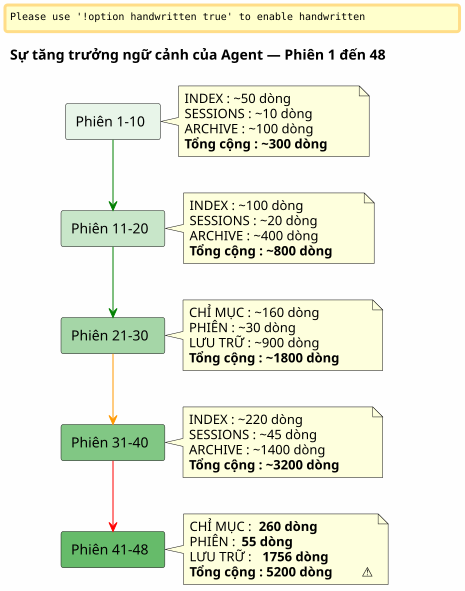

Sliding Window và Vague Froide: Khi Ngữ cảnh Agent bùng nổ và Cần phải Lưu trữ mà không làm Mất dữ liệu
Đăng ngày 26 April 2026
Tóm tắt
Sau 48 phiên làm việc trên một dự án duy nhất và hơn 150 phiên tính tổng cộng, hệ thống quản trị Eager/Lazy mà tôi đã dày công xây dựng bắt đầu trở nên quá tải. Các tệp agent, vốn dĩ phải nhẹ nhàng, nay đã lên tới 5200 dòng cộng dồn. Ngữ cảnh tự động tải (auto-loaded context) tăng nhanh hơn cả khả năng kiểm soát của tôi. Bài viết này kể về cách tôi khái niệm hóa một cơ chế sao lưu — nằm giữa sliding window và một đợt sóng lạnh tương tự — để duy trì một ngữ cảnh hoạt động nhẹ nhàng mà không bao giờ làm mất bất cứ điều gì.
Tín hiệu: 5200 Dòng
Tôi đang trong phiên 048 về`magic-stick`, dự án build ISO Linux live của tôi. Opencode đang theo dõi tôi. Như mọi khi, nó tự động tải các tệp Eager của tôi vào đầu phiên làm việc —AGENT.adoc, PROMPT_REPRISE.adoc, .agents/INDEX.adoc. Không có gì bất thường.
Có điều gì đó không ổn. Các câu trả lời chậm hơn. Tư duy bị loãng hơn. Tác nhân quên đi những chi tiết mà nó vừa nhìn thấy chỉ hai tin nhắn trước đó.
Tôi mở một terminal và nhập:
wc -l .agents/INDEX.adoc .agents/SESSIONS_HISTORY.adoc \
.agents/archives/COMPLETED_TASKS_ARCHIVE_2026-04.adoc260 dòng cho INDEX. 55 dòng cho SESSIONS_HISTORY.1756 cho `COMPLETED_TASKS_ARCHIVEVui lòng cung cấp văn bản tiếng Pháp cần dịch.
Hồ sơ`sessions/`thêm khoảng ~3200 dòng. Tổng cộng:5200 dòngngữ cảnh được nạp, bằng cách này hay cách khác, vào bộ não tạm thời của agent.
Chiến lược Eager/Lazy mà tôi đã lý thuyết hóa trong bài viết trước hoạt động — nhưng nó có một khuyết điểm bẩm sinh mà tôi đã không lường trước được: nó không cókhông có cơ chế lão hóaMỗi phiên sẽ thêm một dòng vào INDEX, một đoạn văn vào COMPLETED_TASKS, và một tệp vào sessions/. Không có gì bao giờ bị xóa đi. Ngữ cảnh giống như một quả cầu tuyết ngày càng lớn dần sau mỗi phiên mới.

Đây không phải là lỗi, mà là hệ quả trực tiếp của quy trình kết thúc phiên làm việc vốn lưu trữ tỉ mỉ từng chi tiết. Hệ thống đang trở thành nạn nhân của chính sự thành công của nó.
Chẩn đoán: Dự phòng ba cấp (Triple Redundancy)
Tôi yêu cầu tác nhân chẩn đoán vấn đề. Câu trả lời của nó là tức thì và chính xác tuyệt đối.
Tệp |
Dòng |
Vai trò |
Vấn đề |
|
260+ |
EAGER (tải tự động) |
Bảng tất cả các phiên kể từ phiên 001 —+1 dòng mỗi phiên |
|
55 |
HÁO HỨC |
Bảng tổng hợp —dư thừa với INDEX |
|
1756 |
EAGER (ngầm định) |
Chi tiết đầy đủ của tất cả các phiên trong tháng Tư |
|
tổng cộng ~5200 |
LAZY (giả định) |
Lưu trữ cá nhân, nhưngkhông được sử dụngvì mọi thứ đã nằm trong `COMPLETED_TASKS |
Đại lý xác định bốn nguyên nhân gốc rễ:
-
COMPLETED_TASKS_ARCHIVE hấp thụ tất cả— Thay vì trỏ đến các bản lưu trữ`.sessions/`, anh ấy sao chép toàn bộ mỗi phiên.
-
INDEX.adoc đóng vai trò là lịch sử đầy đủ— Bảng "Sessions Récentes" chứa hơn 30 mục.
-
SESSIONS_HISTORY.adoc` dư thừa— Cùng thông tin với INDEX, định dạng khác.
-
Quy tắc LAZY không được tuân thủ—
COMPLETED_TASKSngầm định là EAGER vì nó chứa tất cả mọi thứ.
Đề xuất của anh ấy rất quyết liệt: giới hạn INDEX ở 10 phiên, xóa sạch COMPLETED_TASKS, chuyển SESSIONS_HISTORY sang dạng LAZY thuần túy. Lợi ích tức thì:~1900 dòng được tiết kiệmVui lòng cung cấp văn bản cần dịch.
Nó sạch sẽ, hiệu quả, logic. Nhưng tôi có một vấn đề với cách tiếp cận này.
Tại sao Tôi đã Từ chối Giải pháp Hiển nhiên
Giải pháp của agent là giải pháp của một kỹ sư đang tối ưu hóa một bộ nhớ đệm. Giới hạn. Cắt bỏ. Loại bỏ các nội dung dư thừa.
Nhưng những "sự dư thừa" này không thực sự là dư thừa. Mỗi tệp quản trị ghi lại mộtgóc nhìn khácvề cùng một thực tế:
-
CHỈ MỤC= chế độ xem tổng quát, bảng điều khiển điều hành
-
LỊCH_SỬ_PHIÊN= bảng niên biểu tuyến tính, có chấm điểm
-
KHO_LƯU_TRỮ_NHIỆM_VỤ_ĐÃ_HOÀN_THÀNH= tường thuật chi tiết với các số liệu đo lường
-
sessions/*.adoc = lưu trữ cá nhân, ngữ cảnh đầy đủ
Đây không phải là sự sao chép ngớ ngẩn. Đó là sựgóc nhìn đa chiều có cấu trúc. Đó chính xác là những gì chúng ta cần để chưng cất — để sau này, một con người (hoặc một LLM tương lai được huấn luyện tốt hơn) có thể đối chiếu các góc nhìn và trích xuất các mẫu pattern.
Hãy tưởng tượng một nhà khoa học dữ liệu nói với bạn rằng: «Hãy xóa 3 trong số 6 cột, chúng có tương quan với nhau.» Bạn sẽ trả lời họ thế nào? Rằng sự tương quan không phải là sự dư thừa khi mỗi cột nắm bắt một chiều hướng khác nhau của cùng một hiện tượng. Rằng chính sự phong phú về chiều hướng này mới khiến cho tập dữ liệu có giá trị khai thác.
Đó là trực giác của tôi. Và tôi bảo vệ nó trước sự lý tính lạnh lùng của tác nhân.
Vui lòng cung cấp văn bản tiếng Pháp cần dịch. Tôi không thấy có sự nhồi nhét tùy tiện nào trong ý tưởng của mình. Chúng ta không nhồi nhét mọi thứ, mà chúng ta di chuyển kết quả có cấu trúc từ quy trình kết thúc phiên làm việc — mỗi tệp với góc nhìn riêng, với những điểm dư thừa mà thực chất là một sự làm giàu. Chính tư liệu đa chiều này sẽ tốt hơn cho quá trình chắt lọc. Vui lòng cung cấp văn bản cần dịch.
Tác nhân bị ảnh hưởng. Và tự điều chỉnh.
Đề xuất: Làn Sóng Lạnh Tương Tự
Khi đó, tác nhân đề xuất một cơ chế tinh vi hơn, vừa tôn trọng trực giác của tôi về một tập dữ liệu phong phú, vừa giải quyết được vấn đề kỹ thuật về việc bùng nổ ngữ cảnh.
Nguyên lý này đơn giản và được lấy cảm hứng trực tiếp từ patternLưu trữ Nóng/Ấm/Lạnháp dụng cho quản lý lưu trữ:
-
Nóng (EAGER)= 10 phiên gần nhất trong INDEX, PROMPT_REPRISE của phiên N+1, 2 tệp phiên gần nhất
-
Ấm (LAZY)= Lịch sử SESSIONS_HISTORY gần đây, SCRIPT_VERIFICATION, toàn bộ tài liệu tham khảo
-
Lạnh (backup/)= tất cả phần còn lại, đã di chuyểnnguyên vẹn, không biến đổi, không đánh chỉ mục lại
----
.agents/
├── INDEX.adoc → Sessions N-9 à N (10 dernières)
├── SESSIONS_HISTORY.adoc → Sessions N-9 à N
├── SCRIPT_VERIFICATION.adoc → Dernière vérif (pas d'historique)
├── PROMPT_REPRISE.adoc → Session N+1 uniquement
├── sessions/ → Sessions N-1 à N uniquement
└── backup/
└── Y2026-sessions-001-039/ ← Vague froide, COPIE INTÉGRALE
├── INDEX.adoc → Sessions 001 à 039 (complet)
├── SESSIONS_HISTORY.adoc → Sessions 001 à 039 (complet)
├── COMPLETED_TASKS_ARCHIVE.adoc → Sessions 001 à 039 (complet)
└── sessions/ → 001.adoc, 002.adoc...
----
Chìa khóa của cơ chế:**bản sao lưu không phải là một chỉ mục trung tâm, đó là một bản sao chính xác của đợt trước đó**. Khi vượt quá ngưỡng 10 phiên hoạt động, chúng ta không xóa bất cứ thứ gì. Không đánh chỉ mục lại bất cứ thứ gì. Không hợp nhất bất cứ thứ gì. Chúng ta lấy gói tệp agent đúng như trạng thái tại phiên N-10 và di chuyển nó vào`backup/`Vì bạn chưa cung cấp văn bản cần dịch, vui lòng gửi đoạn văn bản tiếng Pháp mà bạn muốn chuyển sang tiếng Việt. Tôi sẽ tuân thủ chính xác tất cả các yêu cầu về định dạng và bảo lưu các đoạn mã trong dấu backtick.
Còn các tệp đang hoạt động thì bị cắt ngắn:
* INDEX : chỉ 10 dòng cuối cùng (sliding window)
* SESSIONS_HISTORY : tương tự
* COMPLETED_TASKS_ARCHIVE : tệp mới cho giai đoạn hiện tại
* sessions/ : chỉ 2 phiên gần nhất
[plantuml, format=svg, id=diag-hot-warm-cold, alt="Architecture Hot/Warm/Cold du contexte agent — EAGER/LAZY/backup"]
----
@startuml
skinparam backgroundColor #FEFEFE
skinparam defaultTextAlignment center
skinparam wrapWidth 200
title Kiến trúc Hot / Warm / Cold của Ngữ cảnh Agent
package "HOT (EAGER)\nĐược tải tự động\n~300 dòng" as HOT #FFCDD2 {
file "INDEX.adoc\n(10 phiên)" as IDX_HOT
file "PROMPT_REPRISE\n(phiên N+1)" as PRO_HOT
file "AGENT.adoc\n(quy tắc tuyệt đối)" as AG_HOT
}
package "WARM (LAZY)\nĐược tải khi có yêu cầu\n~500 dòng" as WARM #FFF9C4 {
file "SESSIONS_HISTORY\n(10 phiên gần nhất)" as HIS_WARM
file "SCRIPT_VERIFICATION\n(phiên cuối)" as VER_WARM
file "PROCEDURES.adoc\n(mẫu)" as PRO_WARM
file "*_REFERENCE.adoc\n(tài liệu kỹ thuật)" as REF_WARM
}
package "COLD (backup/)\nKhông bao giờ tải\nChỉ dành cho con người đọc" as COLD #BBDEFB {
folder "Y2026-001-039/" as WAVE {
file "INDEX (đầy đủ)" as IDX_COLD
file "SESSIONS_HISTORY\n(đầy đủ)" as HIS_COLD
file "COMPLETED_TASKS\n(đầy đủ)" as ARCH_COLD
folder "sessions/ (001-039)" as SESS_COLD
}
folder "Y2026-040-???\n(tương lai)" as FUTURE
}
HOT --> WARM : "Agent truy xuất\nnếu cần"
WARM --> COLD : "Không bao giờ tự động\nCon người tự truy cập"
note bottom of COLD
Quy tắc: SAO CHÉP TOÀN VĂN
Không biến đổi
Không đánh chỉ mục lại
Chỉ đọc sau khi lưu trữ
end note
@enduml
----
Lợi ích tức thì là rất lớn: ngữ cảnh EAGER chuyển từ**~5200 dòng xuống ~300 dòng**. Chia cho 17. Mà không làm mất một dòng dữ liệu lịch sử nào.
== Tại sao đây không phải là một nơi chứa đồ linh tinh
Agent, trong lần lặp đầu tiên, đã lo ngại rằng`backup/`trở thành một chiếc hộp đen — một thư mục nơi người ta ném những tệp tin mà họ sẽ không bao giờ đọc lại. Đó là một nỗi sợ chính đáng. Nhưng nó dựa trên một sự nhầm lẫn.
Một cái túi đựng linh tinh là khi người ta ném các tệp tin**không cấu trúc, không quy ước, không logic gom nhóm**. Tại đây, bản sao lưu được cấu trúc theo giai đoạn (Y2026-001-039), và mỗi thư mục sao lưu chứa**cùng một cấu trúc**rằng hồ sơ`.agents/`đang hoạt động: INDEX, SESSIONS_HISTORY, COMPLETED_TASKS_ARCHIVE, sessions/.
Đây không phải là một nơi chứa đồ linh tinh. Đây là một**snapshot có dấu thời gian**Thậm chí có thể nói rằng đó là một cơ chế versioning đơn giản hóa — chỉ khác ở chỗ nó không versioning từng tệp riêng lẻ, mà là toàn bộ gói quản trị tại một thời điểm T.
Khi bạn muốn tìm lại một thông tin cũ, bạn không cần một chỉ mục trung tâm. Bạn có hai lựa chọn:
1. **grep` có mục tiêu**Vui lòng cung cấp văn bản tiếng Pháp bạn muốn dịch.`grep -r "zsh" backup/Y2026-001-039/`— và bạn sẽ tìm thấy tất cả những gì đề cập đến `zsh` trong khoảng thời gian đó, bất kể góc độ nào (`INDEX`, `SESSIONS_HISTORY`, lưu trữ phiên).
2. **Tái tích hợp thủ công**: bạn sao chép tạm thời thư mục backup vào ngữ cảnh hiện tại, và yêu cầu agent phân tích khoảng thời gian cụ thể này.
Chỉ mục là ngầm định. Nó nằm ngay trong cấu trúc của các tệp tin — mỗi tệp vốn đã là một chỉ mục từ góc nhìn riêng của nó.
== Phép ẩn dụ về những chiếc kệ
Để làm cho cơ chế này trở nên trực quan, tôi đã khái niệm hóa nó thành ba kệ:
* **Kệ 1 (EAGER)**— kế hoạch làm việc. Những gì tôi cần *ngay bây giờ*. INDEX gần đây, PROMPT_REPRISE, các quy tắc tuyệt đối. Gọn nhẹ, tức thì, quan trọng.
* **Kệ 2 (LAZY)**— thư viện tra cứu. Những gì tôi có thể tìm kiếm khi có yêu cầu. Tài liệu kỹ thuật, lịch sử gần đây, quy trình. Dung lượng lớn hơn, nhưng không nạp vào bộ nhớ.
* **Cave (backup/)**— các kho lưu trữ lạnh. Tất cả những gì đã qua nhưng tôi không muốn vứt bỏ. Tác nhân không bao giờ vào đó. Con người xuống đó khi họ muốn chưng cất.
Nhân viên ban đầu đã đề xuất một chiếc kệ thứ tư — một`index-backup.adoc`sẽ là LAZY và chứa một mục lục của toàn bộ bản sao lưu. Tôi đã từ chối. Đó sẽ là một sự dư thừa nữa trong một hệ thống vốn đã chịu sự tăng trưởng tuyến tính. Cấu trúc của các tệp được lưu trữ đã là một chỉ mục rồi.
== Cảm biến Hai Kích hoạt
Việc khái niệm hóa rất vững chắc, nhưng vẫn còn một điểm mù:**chính xác khi nào thì kích hoạt xoay?**Bài viết ban đầu xác định đó là một câu hỏi mở. Hai ngày sau, câu trả lời đã được mã hóa trong các tệp quản trị của sáu dự án: một cảm biến với hai trình kích hoạt.
=== Bộ Kích Hoạt Tự Động — `N % 10 == 0
Trình kích hoạt đầu tiên mang tính toán học. Khi số phiên là bội số của 10 — phiên 10, 20, 30, 40 — quá trình xoay vòng backup sẽ tự động thực thi trong thủ tục kết thúc phiên, ngay sau bước 6.
Tại sao lại là 10? Đó là sự thỏa hiệp giữa hai lực đối lập: một cửa sổ quá ngắn (5 phiên) sẽ làm mất đi ngữ cảnh cần thiết cho sự liên tục; một cửa sổ quá dài (20 phiên) không giải quyết được vấn đề "phình to" của ngữ cảnh. Mười phiên, với nhịp độ một đến hai phiên mỗi ngày, bao quát khoảng một tuần làm việc — đủ để tác nhân nhớ lại các quyết định gần đây, nhưng không quá nhiều để khiến ngữ cảnh bị bùng nổ.
=== Bộ Kích Hoạt theo Ngưỡng — 500 Dòng EAGER
Trình kích hoạt thứ hai là động. Bất kể số phiên là bao nhiêu, nếu các tệp EAGER tích lũy vượt quá**500 dòng**, phép xoay được kích hoạt.
Ngưỡng này bảo vệ chống lại kịch bản khi các phiên làm việc đạt hiệu suất cao một cách bất thường — nhiều nội dung được viết trong ít phiên. Một phiên tạo ra 120 dòng nội dung biên tập sẽ làm `COMPLETED_TASKS_ARCHIVE` tăng nhanh hơn nhiều so với một phiên debug chỉ sửa hai dòng. Ngưỡng 500 dòng, được đo thông qua`wc -l .agents/INDEX.adoc .agents/archives/COMPLETED_TASKS_ARCHIVE_*.adoc PROMPT_REPRISE.adoc`, nắm bắt sự bất đối xứng này.
=== Bộ Kích Hoạt Thủ Công — "rotation backup
Cuối cùng, con người vẫn nắm quyền kiểm soát. Các từ khóa`rotation backup`, `backup rotation` ou `lance la rotation backup`kích hoạt quy trình theo yêu cầu, độc lập với việc kết thúc phiên. Hữu ích khi cảm thấy ngữ cảnh trở nên nặng nề nhưng chưa đạt đến bội số của 10, hoặc khi muốn lưu trữ một giai đoạn làm việc trước khi bắt đầu một giai đoạn mới.
[plantuml, format=svg, id=diag-capteur-trigger, alt="Les trois déclencheurs du capteur de rotation backup — automatique, seuil, manuel"]
----
@startuml
skinparam backgroundColor #FEFEFE
skinparam defaultTextAlignment center
skinparam wrapWidth 200
title Cảm biến Quay dự phòng — Ba Bộ kích hoạt
start
:Procédure de fin de session;
note right: Mots-clés "kết thúc phiên"\nou "dừng tại đây"
:Étapes 1 à 6\n(archivage standard);
note right
1. Lưu trữ sessions/N.adoc
2. CẬP NHẬT PROMPT_REPRISE
3. CẬP NHẬT SESSIONS_HISTORY
4. CẬP NHẬT INDEX.adoc
5. CẬP NHẬT TEST_COVERAGE
6. CẬP NHẬT COMPLETED_TASKS
end note
if (N % 10 == 0\nOU\nEAGER cumulé > 500 lignes ?) then (oui)
:⚙️ Rotation Backup\n(étape 7);
note right
1. Tạo backup/Y20XX-sessions-X-Y/
2. Sao chép toàn bộ INDEX + HISTORY
+ COMPLETED_TASKS + sessions/
3. Cắt bớt các mục hoạt động còn 10 phiên
4. Thêm _Localisation active_
end note
else (non)
:Pas de rotation;
endif
:Checklist [✅] x 7\n(si applicable);
stop
@enduml
----
Sơ đồ này cho thấy vị trí chèn chính xác của cảm biến trong quy trình kết thúc phiên. Bước 7 là tùy chọn — bước này chỉ được thực hiện nếu một trong hai điều kiện là đúng — nhưng nó luôn được *kiểm tra*. Danh sách kiểm tra cuối cùng bao gồm`[✅] 7. Backup roté (si applicable)`Please provide the text you would like me to translate.
=== Vòng lặp Kín
Cảm biến này đóng lại vòng lặp mở từ bài viết trước. Quản trị Eager/Lazy đã giải quyết vấn đề bộ nhớ agent giữa hai phiên làm việc. Cơ chế Hot/Warm/Cold đã giải quyết vấn đề bộ nhớ ngày càng phình to. Cảm biến hai trình kích hoạt giải quyết vấn đề về *thời điểm* — loại bỏ gánh nặng tinh thần cho con người trong việc theo dõi kích thước ngữ cảnh.
[plantuml, format=svg, id=diag-boucle-fermee, alt="Les trois couches de la gouvernance agent — Eager/Lazy, Hot/Warm/Cold, Capteur"]
----
@startuml
skinparam backgroundColor #FEFEFE
skinparam defaultTextAlignment center
title Ba Lớp Quản trị Agent
left to right direction
package "Lớp 1 — Bộ nhớ\n(Điều 0108)" as C1 #E8F5E9 {
rectangle "**EAGER**\nBảng điều khiển\nTự động tải" as EAG
rectangle "**LAZY**\nHướng dẫn sử dụng\nTải theo yêu cầu" as LAZ
EAG -[hidden]right-> LAZ
}
package "Lớp 2 — Lão hóa\n(Điều 0110)" as C2 #FFF9C4 {
rectangle "**HOT**\n10 phiên hoạt động\n~300 dòng" as HOT
rectangle "**WARM**\nTham chiếu\nQuy trình" as WRM
rectangle "**COLD**\nbackup/\nLuồng lạnh" as CLD
HOT -[hidden]right-> WRM
WRM -[hidden]right-> CLD
}
package "Lớp 3 — Trình kích hoạt\n(Hôm nay)" as C3 #BBDEFB {
rectangle "**Auto**\nN % 10 == 0" as AUTO
rectangle "**Seuil**\n> 500 dòng" as SEUIL
rectangle "**Manuel**\nxoay vòng backup" as MAN
AUTO -[hidden]right-> SEUIL
SEUIL -[hidden]right-> MAN
}
C1 --> C2 : "Bộ nhớ tăng trưởng\n→ cần một cơ chế\nlão hóa"
C2 --> C3 : "Sự lão hóa\n→ cần một trình kích hoạt\nđể thực thi"
note bottom of C3
✅ Đã triển khai trên 6 dự án
`magic-stick` · `bakery-gradle`
`plantuml-gradle` · `cheroliv.com`
`jhipster-gradle-plugins`
`quizz-benchmark-gradle
end note
@enduml
----
Ba lớp này được xếp chồng lên nhau một cách logic. Lớp thứ nhất cung cấp bộ nhớ cho agent. Lớp thứ hai ngăn không cho bộ nhớ này làm quá tải agent. Lớp thứ ba tự động hóa việc bảo trì bộ nhớ này để con người không cần phải bận tâm đến nó.
=== Quá trình Di cư Hiệu quả trên cheroliv.com
Cơ chế này không chỉ dừng lại ở mức lý thuyết. Trên`cheroliv.com`, lần xoay backup đầu tiên đã được thực hiện vào ngày 29 tháng 4 năm 2026 — các phiên từ -6 đến 2 đã di chuyển sang`.agents/backup/Y2026-sessions-neg6-a-002/`vui lòng cung cấp nội dung cần dịch.
|===
|Tệp |Trước khi xoay |Sau khi xoay |Lợi nhuận |`.agents/INDEX.adoc` |19 phiên liệt kê |10 buổi (3-12) |-9 đầu vào |`.agents/SESSIONS_HISTORY.adoc` |18 phiên |10 phiên |-8 đầu vào |`COMPLETED_TASKS_ARCHIVE` |161 dòng (phiên 1-12) |135 dòng (phiên 3-12) |-26 dòng |`sessions/` |20 tệp |10 tệp |-10 tệp |**sao lưu/** |Không tồn tại |1 đợt lạnh (10 phiên lưu trữ) |+1 gói lạnh
|===
Mức tăng về số dòng là khiêm tốn — dự án còn non trẻ, 12 phiên — nhưng điều quan trọng là việc**cơ chế đã được thiết lập**. Lần xoay vòng tự động tiếp theo sẽ được kích hoạt tại phiên 20, hoặc sớm hơn nếu đạt đến 500 dòng `EAGER`.
== Bài học Người-Agent
Phiên 048 này đã dạy tôi một điều cơ bản về việc cộng tác với một tác nhân AI.
Tác nhân có một thiên kiến tự nhiên: nó cố gắng**tối ưu hóa**, à **đơn giản hóa**, à **loại bỏ các nội dung dư thừa**. Đó là định kiến của một hệ thống được huấn luyện để tạo ra các câu trả lời sạch sẽ và súc tích. Đối mặt với một tập dữ liệu phong phú và đa chiều, phản xạ đầu tiên của nó là rút gọn nó về dạng biểu hiện đơn giản nhất.
Còn con người thì có một trực giác khác: họ cảm nhận rằng sự dư thừa có cấu trúc là một**lợi thế**, không phải là một khuyết điểm. Rằng sự đa dạng của các góc nhìn trên cùng một thực tại chính là điều sẽ cho phép, sau này, một sự chắt lọc chất lượng.
Không phải là tác nhân sai. Mà là "mức tối ưu" của nó không phải là của tôi. Tác nhân tối ưu hóa cho**hiện tại**— ngữ cảnh tức thời, câu trả lời nhanh cho câu hỏi được đặt ra. Con người tối ưu hóa cho**tương lai**— khả năng tìm lại, đối chiếu, chắt lọc trong ba tháng hoặc ba năm tới.
Vui lòng cung cấp văn bản tiếng Pháp cần dịch. Điều tôi muốn là những tài liệu thô. Những suy nghĩ, những do dự, những câu trả lời cho các câu hỏi của tôi. Không phải bản tổng hợp của bạn. Việc tổng hợp, tôi biết làm tốt hơn bạn. Tôi muốn nguyên liệu thô. Vui lòng cung cấp văn bản tiếng Pháp cần dịch.
Câu nói mà tôi đã nói với anh ấy vào cuối buổi làm việc đã tóm gọn tất cả. Agent là một công cụ sản xuất. Con người là công cụ chắt lọc. Quản trị không phải để agent tự hiểu hết mọi thứ — mà là để con người, sau đó, có thể tinh chỉnh chất liệu được tạo ra.
Làn sóng lạnh tương tự chính là sự chuyển dịch về mặt kiến trúc của triết lý này: không vứt bỏ gì, không hợp nhất gì, không lập chỉ mục lại gì. Gói dữ liệu được di chuyển nguyên vẹn. Việc chắt lọc sẽ diễn ra sau đó, thủ công, bởi con người.
== Phần Tiếp Theo Logic của Bài Viết Trước
Nếu bạn đã đọclink:/blog/2026/0108_gouvernance_agent_opencode_eager_lazy_post.html[bài viết về chiến lược Eager/Lazy], bạn sẽ nhận thấy sự tiến triển tự nhiên:
1. **Điều 0108**— Quản trị Eager/Lazy: *cách* cấu trúc ngữ cảnh agent thành hai mức độ khả dụng
2. **Bài viết 0110 này**— Cơ chế backup: *làm thế nào* để làm cũ ngữ cảnh này mà không làm mất nó khi nó trở nên quá lớn
Bài viết đầu tiên đã trả lời câu hỏi: « Agent không nhớ gì giữa hai phiên làm việc, làm thế nào để cung cấp bộ nhớ cho nó?
Câu này trả lời cho câu hỏi tất yếu nảy sinh từ câu đầu tiên: « Bộ nhớ tăng lên sau mỗi phiên, làm thế nào để ngăn nó làm nghẹt tác nhân mà không cần xóa sạch?
Câu trả lời nằm ở một pattern:**Nóng/Ấm/Lạnh**, áp dụng cho các tệp quản trị. Và thành một nguyên tắc:**không bao giờ đánh mất bất cứ điều gì, luôn định vị lại tất cả mọi thứ**Vui lòng cung cấp văn bản cần dịch.
== Liên kết
* Bài viết trước:link:/blog/2026/0108_gouvernance_agent_opencode_eager_lazy_post.html[Điều khiển một Agent AI bằng AsciiDoc]
* Trang web của tôi: https://cheroliv.com
* Dự án`magic-stick`: https://github.com/cheroliv/magic-stick
---
Một hệ thống quản trị tốt không bao giờ xóa dữ liệu. Nó lưu trữ chúng.